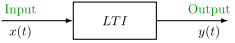
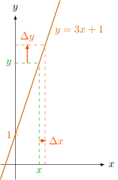
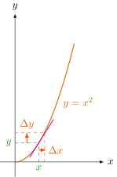
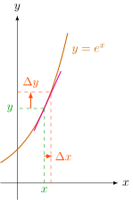
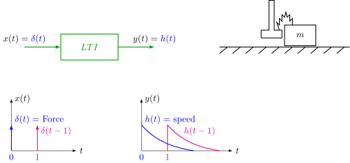
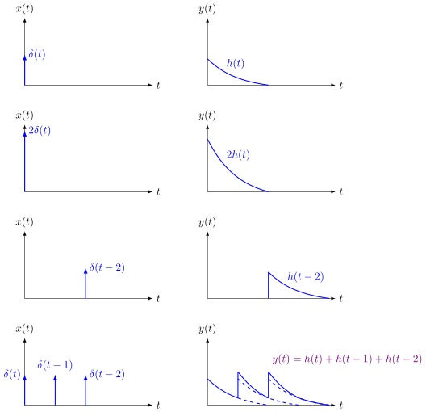
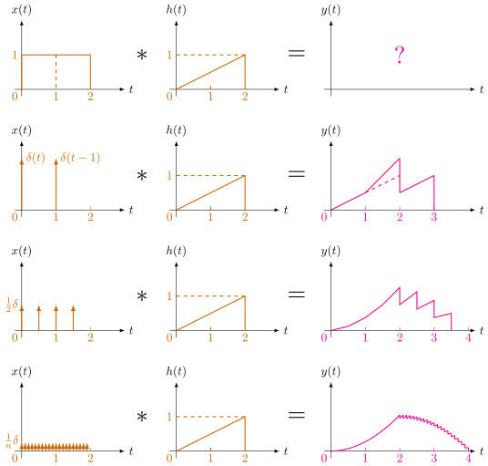

1 Convolution
1.1 Linear Time-Invariant (LTI) Systems

Classical control theory (root locus, Bode plot)
3 properties
\(\color{RedOrange}\boxed{\textbf{Homogeneity}}\)
\[\begin{equation} \underset{\quad\quad\quad \color{magenta} {}^{\uparrow_{\hspace{-3pt}\_\_\_}}\,\,\text{scaling factor}} {\begin{array}{rcl} \text{if} \quad x & \rightarrow & y \\ \text{then} \quad 2x & \rightarrow & 2y \\ \color{magenta}a \color{black} \,x & \rightarrow & \color{magenta}a \color{black} \,y \end{array}} \end{equation}\]

small-signal modeling: \[\begin{align*} \color{RedOrange} Y + \Delta y \,&\color{RedOrange}= 3(X + \Delta x) + 1 \\ \color{magenta}\underline{\color{RedOrange} Y} \color{RedOrange} + \Delta y \,&\color{RedOrange}= \color{magenta}\underline{\color{RedOrange} 3X} \color{RedOrange} + 3\Delta x + \color{magenta}\underline{\color{RedOrange}1} \\ \color{RedOrange} \Delta y \,&\color{RedOrange}= 3\Delta x \end{align*}\]

\[\begin{align*} \color{RedOrange} Y + \Delta y \,&\color{RedOrange}= (X + \Delta x)^2 \\ \color{magenta}\underline{\color{RedOrange} Y} \color{RedOrange} + \Delta y \,&\color{RedOrange}= \color{magenta}\underline{\color{RedOrange} X^2} \color{RedOrange} + 2X \cdot \Delta x + \color{magenta}\cancel{\color{RedOrange} \Delta x^2} \quad \text{for small }\Delta x \\ \color{RedOrange} \Delta y \,&\color{RedOrange}= \color{magenta}\underset{\displaystyle\frac{dy}{dx}\bigg\rvert_{x=X}}{\underset{\uparrow}{\underline{{\color{RedOrange} 2X}}}} \color{RedOrange} \cdot \Delta x \end{align*}\]

\[\begin{align*} \color{RedOrange} \Delta y \,&\color{RedOrange}= e^X \cdot \Delta x \end{align*}\]
\(\color{RedOrange}\boxed{\textbf{Superposition}}\)
\[\begin{array}{lrcl} \text{if} & x_1 & \rightarrow & y_1, \\ & x_2 & \rightarrow & y_2 \\ \text{then} & (x_1+x_2) & \rightarrow & (y_1+y_2) \end{array}\]\(\color{RedOrange}\boxed{\textbf{Time Translation}}\)
\[\begin{array}{lrcl} \text{if} & x(t) & \rightarrow & y(t), \\ \text{then} & x(t-\tau) & \rightarrow & y(t-\tau) \end{array}\]E.g. Unit impulse response

1.2 Convolution
\[\begin{equation} h(t) * x(t) = \int_{-\infty}^{\infty} x(\tau)h(t-\tau) \,d\tau \end{equation}\]
where \(h(t)\) is the unit impulse response: \(\begin{cases}\text{when } x(t) = \delta(t)\\\text{then } y(t) = h(t)\end{cases}\)

\[ \int_{-\infty}^{\infty} h(t) \,dt = 1. \qquad y(t) = \delta(0) \cdot h(t) + \delta(1) \cdot h(t-1) + \delta(2) \cdot h(t-2) .\]
For LTI system, \(y(t)\) is the sum of the scaled unit impulse response of \(x(t)\) at each time instant \(\tau\). \[y(t) = \int_{-\infty}^{\infty} x(\tau)h(t-\tau) \,d\tau\] where \(x(\tau)\) is the scaling factor at \(t=\tau\), and \(h(t-\tau)\) is the unit impulse response at \(t=\tau\).
For a continuous \(x(t)\) with \(h(t) = \dfrac{1}{2}t\), (\(0 \le t \le 2\)), what is \(y(t)\)?

Time domain convolution compuation is expensive, and it can be simplified by using Fourier transform to transfer convolution in time domain to multiplication in frequency domain.
\[\text{Time domain} \underset{\text{F. T.}}{\overset{\text{Fourier Transform}}{\longrightarrow}} \text{Frequency domain}\]
\[\text{F. T.:}\quad Y(\omega) = \int_{-\infty}^{\infty} y(t) e^{-j\omega t} \,dt\]
Proof: \(\mathcal{F}[f(t) * g(t)] = F(\omega) \cdot G(\omega)\).
\[\begin{align*} \mathcal{F}[f(t) * g(t)] &= \int_{-\infty}^{\infty} \left(\int_{-\infty}^{\infty} f(\tau)g(t-\tau) \,d\tau\right) \cdot e^{-j\omega t} \,dt \\ &= \int_{-\infty}^{\infty} \int_{-\infty}^{\infty} f(\tau) \cdot g(t-\tau) \cdot e^{-j\omega t} \,d\tau dt \\ &= \int_{-\infty}^{\infty} f(\tau) \left( \int_{-\infty}^{\infty} g(t-\tau) e^{-j\omega t} \,dt \right) d\tau \\ &= \int_{-\infty}^{\infty} f(\tau) \cdot e^{-j\omega \tau} \cdot G(\omega) \,d\tau \tag{see note below} \\ &= G(\omega) \cdot \int_{-\infty}^{\infty} f(\tau) e^{-j\omega \tau} \,d\tau \\ &= F(\omega) \cdot G(\omega) \end{align*}\]
Note that: \[\begin{align*} \mathcal{F}[g(t)] &= G(\omega) \\ \mathcal{F}[g(t-\tau)] &= \int_{-\infty}^{\infty} g(t-\tau) e^{-j\omega t} \,dt \\ &= \int_{-\infty}^{\infty} g(t-\tau) e^{-j\omega (t-\tau)} \,dt \cdot e^{-j\omega \tau} \\ &= \int_{-\infty}^{\infty} g(u) e^{-j\omega u} \,du \cdot e^{-j\omega \tau} \tag{let $u = t-\tau$} \\ &= e^{-j\omega \tau} \cdot G(\omega) \end{align*}\]